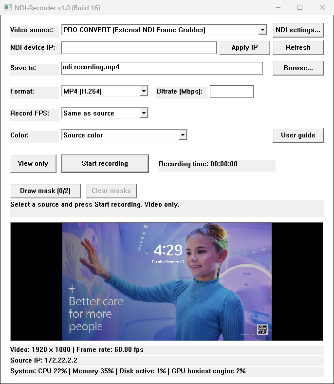
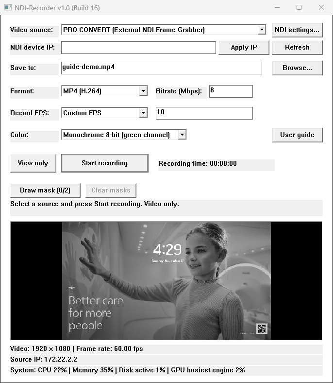
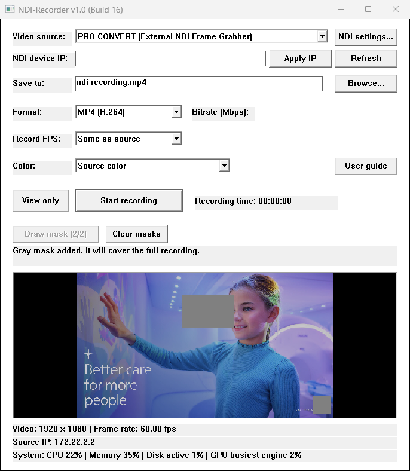
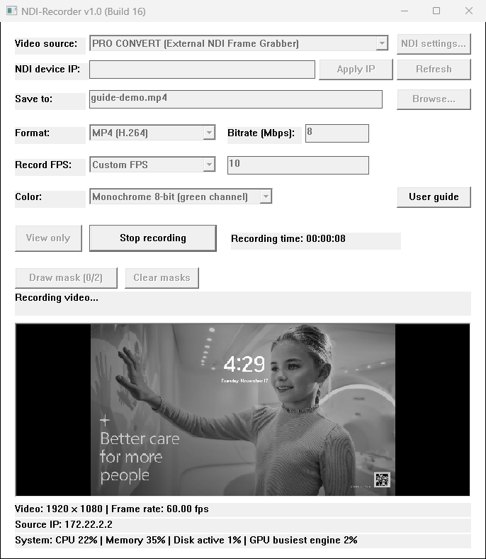
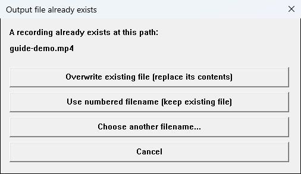
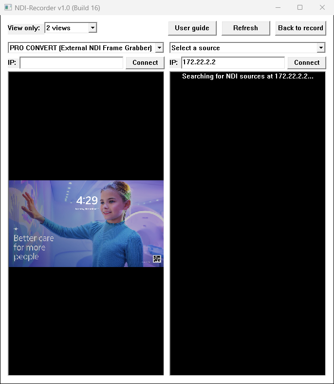
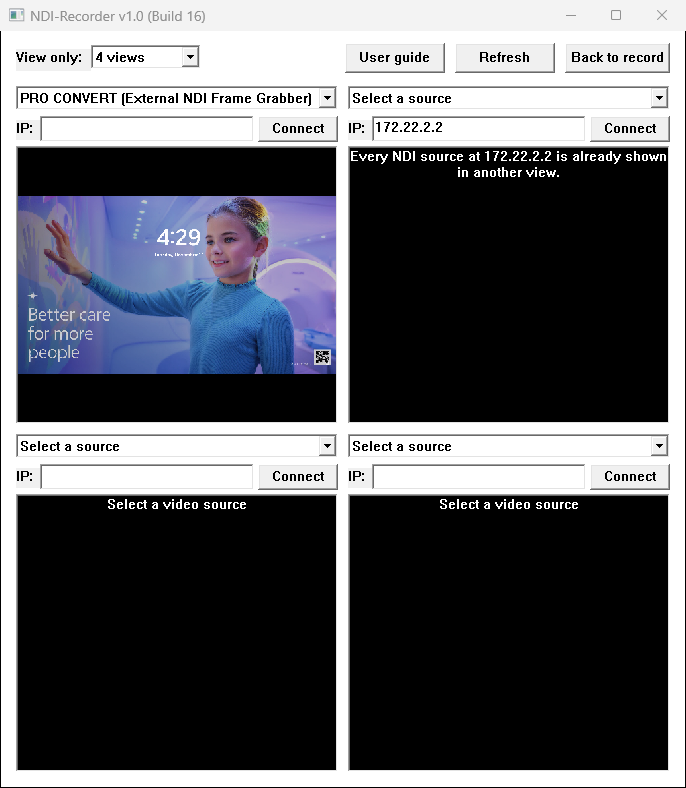

1. Main window overview
When NDI-Recorder starts it opens the recording screen. The selected source is shown in the live preview, and all recording settings are above it.

| Control | Purpose |
|---|---|
| Video source | Choose the NDI source to preview and record. |
| NDI device IP + Apply IP | Find NDI devices on another subnet by entering their IP address. |
| NDI settings... | Opens the web settings page of the selected NDI device in your browser (see NDI device settings). |
| Refresh | Search for sources again (for example, after you connect a new device). |
| Save to + Browse... | Output file name and folder. |
| Format, Bitrate, Record FPS, Color | How the video is encoded (see Recording settings). |
| Draw mask / Clear masks | Draw up to two gray rectangles over private areas in the preview. Masks are permanently applied to the saved video. |
| User guide | Opens this guide. You can also press F1. |
| View only | Watch 2 or 4 sources side by side without recording. |
| Start recording | Start the recording. While recording, this button changes to Stop recording. |
2. Choosing a video source
- Open the Video source list and choose a source. The preview starts automatically.
- If your device is missing, connect it and click Refresh.
- NDI on another network: type the device IP address (for example
172.22.2.2) in NDI device IP and click Apply IP. The source list is cleared and refreshed, and after a few seconds the device's NDI sources appear together with the automatically discovered sources. To go back to automatic discovery only, clear the field and click Apply IP again.
3. Recording settings

Save to
Type a file name or click Browse... to choose a folder and name. If the file name has no folder, the file is saved in the folder the app was started from. The file extension follows the selected format (.mp4 or .avi).
Format
| Format | When to use it |
|---|---|
| MP4 (H.264) | Small files that play everywhere. Good default choice. |
| MP4 (H.265/HEVC) | About half the size of H.264 at the same quality. Requires an HEVC-capable player. |
| AVI (uncompressed) | Exact pixels, no compression. Very large files – needs a fast disk. |
| AVI (Lagarith) | Lossless compression (exact pixels, smaller than uncompressed). Requires the Lagarith codec to be installed. Click Codec settings... to configure it. |
Bitrate (Mbps)
For MP4 formats only. Enter a value from 1 to 1000 Mbps, or leave it blank for Auto. A higher bitrate gives better quality and larger files.
Record FPS
| Choice | Result |
|---|---|
| Same as source | Records every frame at the source frame rate (default). |
| 30 FPS / 15 FPS / 7.5 FPS | Records at a lower, fixed frame rate to make smaller files. |
| Custom FPS | A box appears next to the list. Enter any rate from 1 to 85 FPS; decimals are allowed (for example 12.5). |
Color
| Choice | Result |
|---|---|
| Source color | Records the picture as it arrives. |
| Monochrome 8-bit (green channel) | Records only the green channel as 8-bit grayscale. Use this for sync-on-green sources. The preview changes to gray, so you can check the result before you record. |
Masking private information (anonymization)
- Select the source you plan to record and wait for its live preview.
- Click Draw mask (0/2), then drag a rectangle over the private area in the video picture. Drag inside the picture, not the black bars around it.
- To cover a second area, drag another rectangle. To stop after one mask, click Draw mask (1/2) again. Click Clear masks to remove all masks and start over.
- Check that every private area is fully covered by a gray rectangle before clicking Start recording.

4. Recording a video
- Choose the source and settings as described above. If needed, add privacy masks before recording and check that they fully cover the private information in the preview.
- Click Start recording. The settings are locked, the status line shows Recording video... and the Recording time counter starts.
- Click Stop recording to finish. The status line shows Recording saved.

5. When the file already exists
If a file with the same name already exists when you click Start recording, NDI-Recorder asks what to do:

| Button | Result |
|---|---|
| Overwrite existing file | Replaces the old recording. The old file is lost. |
| Use numbered filename | Keeps the old file and records to the next free name, for example ndi-recording_1.mp4. |
| Choose another filename... | Opens a Save dialog so you can choose a new name or folder. |
| Cancel | Does not start recording. |
6. View only (2 or 4 views)
Click View only on the recording screen to watch several sources at the same time. Nothing is recorded in this mode.

- Choose 2 views or 4 views in the View only list at the top.
- Use the list above each view to choose its source.
- Connect a view by IP: type the NDI device IP in that view's IP box and click Connect (or press Enter). The view searches for up to 15 seconds and shows the first source at that address that is not already shown in another view. The other views keep playing.
- Click Refresh to search for sources again.
- Click Back to record to return to the recording screen.

| Message in a view | Meaning |
|---|---|
| Select a video source | No source has been chosen for this view yet. |
| Searching for NDI sources at <IP>... | Waiting for the device to answer (up to 15 seconds). |
| No NDI source found at <IP> | Check the IP address, the network connection, and that the device is sending NDI. |
| Every NDI source at <IP> is already shown in another view | All sources of this device are already on screen. Choose another source or device. |
7. NDI device settings
Many NDI devices (for example converters and cameras) have their own settings web page. To open it:
- Select the NDI source in Video source and wait for the preview, so the Source IP line shows its address.
- Click NDI settings.... The device's web page (for example
http://172.22.2.2/) opens in your default web browser. - Log in with the device's own username and password if it asks for them, and change the settings there.
The button is disabled while recording. If the selected source is not an NDI source, or its IP address is not known yet, the app shows a message instead.
The NDI device IP you apply on the main screen is remembered the next time you open the app.
8. Status and information lines
| Line | Shows |
|---|---|
| Status (below the buttons) | What the app is doing: connecting, recording, saved, or an error message. |
| Recording time | Length of the current (or last) recording. |
| Video | Source resolution and frame rate. |
| Source IP | Network address of the selected NDI source. |
| System | CPU, memory, disk and GPU load. If the disk or CPU stays near 100%, use a compressed format or a lower frame rate. |
9. Build number
The window title shows the version and build number, for example NDI-Recorder v1.0 (Build 4). Please include the build number when you report a problem.
10. Troubleshooting
| Problem | What to try |
|---|---|
| Source is not in the list | Click Refresh. For NDI on another subnet, enter its IP and click Apply IP. Check that the device is sending NDI and that the PC and the device are on a reachable network. |
| "Enter a numeric IPv4 or IPv6 address" | Use a numeric address such as 192.168.1.20, not a host name. |
| Bitrate or Custom FPS error | Bitrate must be 1–1000 Mbps (or blank); Custom FPS must be 1–85. |
| "Lagarith unavailable" | Install the Lagarith codec, or choose another format. |
| Recording drops frames or stutters | Watch the System line. Use MP4, a lower Record FPS, or save to a faster local disk. |